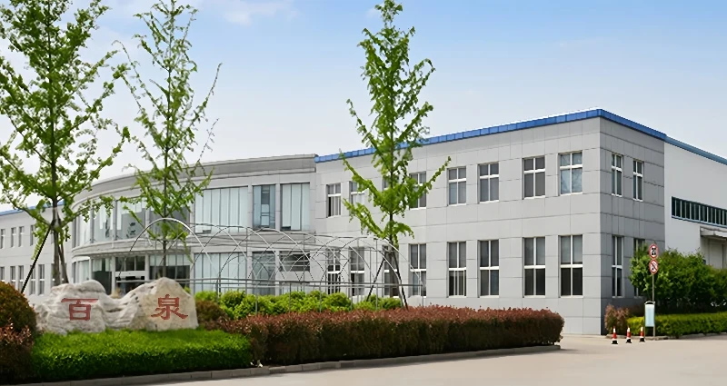

Ingredientes alimentarios
Fosfatos de grado alimentario, acidulantes, conservantes, texturizantes y otros ingredientes funcionales para alimentos y bebidas.
Ver ingredientes alimentariosPerfil de la empresa
Proveedor chino de ingredientes alimentarios, aditivos para piensos y productos químicos industriales, respaldado por décadas de experiencia en fosfatos y comercio internacional.

Quiénes somos
Bespring Chemical Co., Ltd. es un proveedor chino de ingredientes y productos químicos para clientes de los sectores alimentario, nutrición animal e industria en más de 60 países.
Nuestros orígenes se remontan a la década de 1970 y a la antigua Planta Química n.º 2 de Pizhou, una de las primeras productoras chinas de fosfatos de grado alimentario e industrial. Esa trayectoria industrial sustenta hoy nuestros conocimientos técnicos y nuestro enfoque en la calidad.
La empresa se reestructuró bajo el nombre Bespring en 2014. Hoy combinamos fosfatos de marca propia con productos seleccionados de socios de producción homologados, ofreciendo a los compradores internacionales una fuente coordinada y práctica de ingredientes y materias primas.
Conozca nuestra red de producciónQué suministramos
Nuestro catálogo se organiza según las necesidades de aplicación de procesadores de alimentos, fabricantes de piensos y usuarios industriales.
Fosfatos de grado alimentario, acidulantes, conservantes, texturizantes y otros ingredientes funcionales para alimentos y bebidas.
Ver ingredientes alimentariosFosfatos para piensos y aditivos nutricionales seleccionados para formulación de piensos y producción ganadera.
Ver aditivos para piensosMaterias primas químicas para tratamiento de aguas, limpieza industrial, minería y aplicaciones agrícolas.
Ver productos industrialesNuestra evolución
Nuestra evolución ha seguido una dirección constante: aplicar conocimientos químicos prácticos a las necesidades cambiantes de clientes y mercados.
La empresa tiene su origen en la Planta Química n.º 2 de Pizhou y en la producción de fosfatos de grado alimentario e industrial.
Los procesos y las aplicaciones se ampliaron a los sectores alimentario, de piensos e industrial.
Una importante reestructuración dio lugar a Bespring Chemical Co., Ltd. y reforzó su orientación internacional.
Bespring suministra a clientes de más de 60 países gracias a su experiencia en fosfatos y su red de socios de producción.
Cómo trabajamos
Acompañamos al comprador desde la selección del producto hasta la entrega de exportación mediante un único contacto comercial coordinado.
Las opciones de producto se ajustan al grado, la aplicación y los requisitos del mercado del cliente.
Confirmamos las especificaciones y la documentación disponible antes de cerrar las condiciones de suministro.
Nuestro equipo coordina el embalaje, la comunicación del pedido y los requisitos del transporte internacional.
Seguimos atendiendo al cliente después del primer pedido para facilitar compras recurrentes y nuevas necesidades.
Respuestas rápidas
Respuestas claras para equipos de compras que evalúan un nuevo proveedor de ingredientes o productos químicos.
Suministramos fosfatos, ingredientes alimentarios, aditivos para piensos y productos químicos para tratamiento de aguas, limpieza industrial, minería y agricultura.
Bespring nació de una empresa fabricante de fosfatos. Hoy suministramos fosfatos de marca propia y productos seleccionados de socios de producción homologados mediante una red integrada de suministro.
Nuestra sede se encuentra en Pizhou, provincia de Jiangsu, con acceso a las consolidadas redes chinas de ingredientes, productos químicos y logística de exportación.
Atendemos a clientes de más de 60 países de Asia, Oriente Medio, Europa y otras regiones.
Trabaje con Bespring
Indique a nuestro equipo de exportación el producto, la especificación, la cantidad y el mercado objetivo.